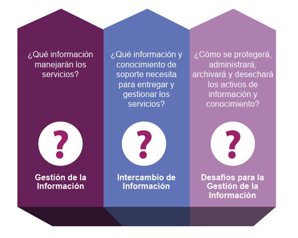

Las organizaciones manejan muchos datos todos los días, y para controlarlos usan tecnología. Esta parte se enfoca en dos cosas principales: Información y la tecnología que la controla.
Una organización debe de contestar las siguientes preguntas.
Manejar bien la información es clave para dar valor a los clientes. Casi todos los servicios de tecnología que usan los negocios tienen como resultado el manejo de información.
También es importante cómo se comparte la información entre los distintos servicios de una organización. Para que todo funcione bien, la información debe ser. Disponible cuando se necesita, Confiable, Accesible y Precisa
Existen reglas y normas legales que deben cumplirse, como:
- Reglas de seguridad.
- Requisitos de privacidad según el país o el sector.
Estas regulaciones afectan cómo las organizaciones crean sus políticas y prácticas para manejar los datos correctamente.
Hoy en día, casi todos los servicios dependen de la tecnología de información (TI). Las organizaciones pueden decidir en qué momento y cómo usarla para sus productos o servicios.
- ¿La nueva tecnología funciona bien con la que ya tiene la empresa y sus clientes?
- ¿Cómo afectan las tecnologías emergentes al servicio o al trabajo de la empresa?
- ¿Existen políticas, normas o controles de seguridad que deban respetarse?
- ¿La tecnología seguirá siendo útil dentro de poco tiempo?
- ¿Conviene quedarse con tecnología antigua o arriesgarse con una nueva sin mucha prueba?
- ¿La tecnología va en la misma dirección que la estrategia de la empresa y sus clientes?
- ¿La nueva tecnología trae problemas o limitaciones que antes no existían?
Cada empresa es diferente. Algunas quieren usar lo más moderno (como inteligencia artificial) lo antes posible. Otras prefieren seguir trabajando con métodos más tradicionales y seguros.
Hay negocios (como gobierno, finanzas o salud) que manejan información muy sensible. Por eso, tienen más restricciones y no pueden usar cualquier tecnología, como el software de código abierto o servicios en la nube públicos, por temas de seguridad.
© 2025 UNIVERSIDAD NACIONAL AUTÓNOMA DE MÉXICO.